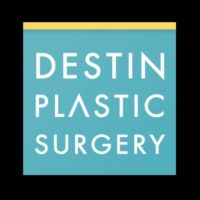

Name: Destin Plastic Surgery
Display name: Destin Plastic Surgery
Mission: At Destin Plastic Surgery, board-certified plastic surgeon, Dr. William R. Burden offers patients from Destin, Panama City, and Pensacola a wide variety of cosmetic surgery procedures. Specializing in breast enhancement, body contouring, and facial sculpting, popular procedures offered at Destin Plastic Surgery include Mommy makeover, Brazilian Butt Lift, and Breast Augmentation.
Website: https://www.theplasticdoc.com/contact-us/location-and-directions/
Office hours: Mon: 7:00am – 5:00pm
Tue: 7:00am – 5:00pm
Wed: 7:00am – 5:00pm
Thu: 7:00am – 5:00pm
Fri: 7:00am – 2:00pm
Phone: (850) 427-6482
Twilio phone: (850) 427-6482
Address: 4485 Furling Ln., The Grant Bldg., Destin, Florida, USA, 32541
City: Destin
State: Florida
Country code: US
Postal code: 32541
Phone: +18506541194
Country: USA
GPS coordinates on map: 30.3878182,-86.4057186
Destin Plastic Surgery
Treatments:
- Botox
- Cheek Lift
- Neck Lift
- Juvederm
- Facelift
- Lower Facelift
- SMAS Facelift
- Restylane
- Radiesse
- Rhinoplasty
- Breast Lift
- Cheek Augmentation
- Laser Hair Removal
- Laser Resurfacing
- Fraxel Laser
- Breast Reduction
- Chemical Peel
- Sclerotherapy
- Blue Peel
- TCA Peel
- Liposuction
- Butt Augmentation
- Brazilian Butt Lift
- Tumescent Liposuction
- Liposculpture
- Facial Fat Transfer
- Eyelid Surgery
- Tummy Tuck
- Brow Lift
- Hair Transplant
- Facial
- Nonsurgical Facelift
- QuickLift
- Dysport
- Labiaplasty
- Nonsurgical Nose Job
- Chin Implant
- Gynecomastia Surgery
- Ear Surgery
- AlloDerm
- Retin-A
- Lipoma Removal
- Breast Implants
- Body Lift
- Arm Lift
- Thigh Lift
- ProFractional Laser
- Latisse
- Double Eyelid Surgery
- Breast Implant Removal
- Lip Fillers
- Mini Tummy Tuck
- Chin Liposuction
- Nipple Surgery
- Butt Lift
- Mole Removal
- Skin Rejuvenation
- Mini Facelift
- Revision Rhinoplasty
- Scar Removal
- Lip Lift
- Genioplasty
- Septoplasty
- Pec Implants
- Mommy Makeover
- Laser Peel
- Dermal Fillers
- Breast Augmentation
- Fractional Laser
- Facial Reconstructive Surgery
- Earlobe Repair
- Xeomin
- Buccal Fat Removal
- Lip Surgery
- Breast Implant Revision
- Tummy Tuck Revision
- Asian Rhinoplasty
- African American Rhinoplasty
- Male Tummy Tuck
- Strattice
- Vaginoplasty
- Voluma
- Belly Button Surgery
- Breast Fat Transfer
- Breast Lift with Implants
- Brazilian Butt Lift Revision
- Sientra Breast Implants
- Vaginal Rejuvenation
- MACS Facelift
- Cellfina
- Restylane Silk
- Kybella
- Natrelle Breast Implants
- SkinPen
- Renuva
- Alastin Skincare
RealSelf Info
Profile created: Dec 22, 2016
Profile modified: Aug 8, 2023
Business type: Practice
Is national account: 0
Review count: 193
Rating: 4.8
Rating time spent: 5
Rating answered questions: 5
Rating bedside manner: 5
Rating after care: 5
Rating payment process: 5
Rating wait times: 5
Rating courtesy: 5
Rating responsiveness: 5
RealSelf’s PRO: Yes
Realself network status: candidate
Profile views: 0
Doctors

William R. Burden, MD, FACS
Statement: Dr. William R. Burden is a board-certified plastic surgeon practicing in Destin, Florida. While he is skilled in various surgical procedures relating to facial and body aesthetics, he specializes in mommy makeovers, breast surgery, and butt enhancement.
Dr. Burden is known for pioneering “No Scar on the Breast” augmentation and has authored a book on the technique. His expertise and artistic talents in cosmetic plastic surgery are lauded in his field, and his warm and personable approach to patient care is greatly admired by his peers.
Dr. Burden’s early education consisted of studying biochemistry and biology at Virginia Tech. He then went on to get his medical degree at the Medical College of Virginia before completing his general surgery residency at the Louisiana State University School of Medicine. He also received fellowship training at the University of Florida. Dr. Burden is board-certified by the American Board of Plastic Surgery and is a member of both the American Society of Plastic Surgeons and the Fellow American College of Surgeons.
A highly respected surgeon, Dr. Burden has been the recipient of many awards and honors throughout his over 25-year career, including Best Plastic Surgeon on the Emerald Coast, Executive board LEAD for Mentor Corp, Outstanding Chief Resident, and a Top Plastic Surgeon.
Began aesthetic medicine in: 1995
Rating: 4.8
Staff
Name: Bill Edelman, PA-C
Position: Physician Assistant
Years experience: 20
Biography: Our longtime physician assistant Bill Edelman earned the nickname “BOTOX Bill” through his dedication to mastering the craft of cosmetic injectable treatments, including dermal fillers in addition to BOTOX® Cosmetic. Patients travel not only from Pensacola and Panama City for BOTOX treatments at Destin Plastic Surgery, but from throughout Florida and beyond.
Bill’s reputation as a perfectionist with an excellent eye for detail is well-known, and he’s one of the most knowledgeable providers of BOTOX Cosmetic in the Southeast.
Discover why women and men travel to Destin for BOTOX and other aesthetic injections performed by Bill by requesting a free injectable consultation online or calling our office.
Name: Joan Pleat, BSN, RN
Position: Registered Nurse
Years experience: 28
Biography: Joan Pleat, BSN, RN, graduated from Duquesne University in Pittsburgh, PA, with a bachelor’s degree in nursing. Joan worked in the intensive care unit (ICU) and step-down unit with critical care patients at Peninsula General Hospital in Salisbury, MD. Joan then moved to Baltimore, MD, where she worked in the OB/GYN and newborn nursery unit at Johns Hopkins Hospital. Her critical care experience at Johns Hopkins and other hospitals allowed her to gain much medical experience and knowledge.
Joan moved with her family to Rockville, MD, to assume a position as the head surgical nurse for the Podiatric Surgical Center. She also worked in the community health and maternal child units at Shady Grove Adventist Hospital where she taught classes in childbirth, breastfeeding, and American Heart Society Life Support training. Joan is certified in advanced cardiac life support.
Name: Sally Surgnier, RN
Position: Registered Nurse
Years experience: 21
Biography: Born and raised in Florida, Sally started her medical career in 1978 as a registered nurse learning how the body works both inside and out. Her passion became focused on specializing solely on the skin and understanding the complexities of it.
In 1997, she took a 600-hour medical aesthetician course and obtained her skincare specialty license as a certified medical aesthetician in the states of Florida and Alabama, which allowed her to work with dermatologists and plastic surgeons using the latest innovative technology in medical skincare.
Sally has been employed at Destin Plastic Surgery’s Anti-Aging Clinic of Destin since 2003 and has dedicated herself to over 2,000+ clients by helping them attain healthy skin through results-oriented therapy such as facials, peels, and clinical grade cosmeceuticals. Having the privilege of working with two highly sought-after physicians in Destin, she feels like there is so much to still learn and strives to keep herself educated.
Name: Machele Hale
Position: Patient Care Coordinator
Years experience: 19
Biography: Machele Hale is a native of the Destin area and joined Destin Plastic Surgery in 2000. Since that time, she has worked in patient scheduling and finance with a focus on providing excellent customer service. When you meet Machele, you are taken in by her warmth, mannerism, and friendliness.
Machele will coordinate the scheduling of your surgery and your preoperative and postoperative care to make the process as smooth as possible. She will also explain the cost of your procedure, including the surgeon’s fees, the anesthesia fee, and the facility fee.
Name: Patricia Sgobba
Position: Aesthetician
Years experience: 22
Name: Melissa St. John
Position: Aesthetician
Years experience: 13
Biography: Melissa St John has been a licensed Esthetician since 2005 and has most recently been voted Best Esthetician of the Emerald Coast for 2012 and 2013. She gained her experience working for one of the top rated Resort Spas in the state of Florida before transitioning to the exciting clinical side of skincare. She has a true passion in the skincare industry, helping her clients achieve optimal results through clinical grade procedures and products. She is also a certified Xtreme Lash Extension stylist offering lash extensions and fills.
“The best part about my job is the fact that I love making a difference in the appearance and health of my clients’ skin. Nothing is more rewarding to me than seeing my clients’ skin rejuvenate into something beautiful while also improving their self esteem.”
Name: Natalie Kline
Position: Patient Care Coordinator
Years experience: 10
Biography: Natalie has worked for Destin Plastic Surgery and Dr. Burden since June 2008. She was initially a front desk patient liaison, then she became the skincare manager, and now she wears multiple hats working as a patient care coordinator and doing some skincare management. She has received a tremendous amount of top notch training in skincare products, injectables and different procedures to improve skin wellness while working at the front desk. Whether you are wanting to know about skincare products, injectables or a surgery, Natalie can help!
As a patient care coordinator, Natalie serves as our patients’ liaison from scheduling their initial consultation through their surgery and post-operative care. She helps answer questions regarding your procedure, financing options and surgery scheduling. She appreciates the privilege of being a part of patients’ decision to have surgery and wants to ensure that our patients have an incredible experience from beginning to end.

Sarah DePaul
Name: Sarah DePaul
Position: Practice Manager
Biography: As our plastic surgery clinic manager, Sarah is one of the first faces you will see when arriving at our practice. Sarah loves relating to patients on a personal level.
“Building relationships is very important to me, I truly care about every patient.”
She oversees all our laser and injectable appointments. Sarah also works with our marketing team to provide them with up to date events and “what’s happening” at the practice.
Sarah joined us a few years ago, when she moved to Florida from New York, where she was a makeup artist/stylist in the fashion world. She has always been fascinated by the medical field and believes overall health is a result of a combination of things, including feeling confident about one’s self.
Practice’s answers
Question
Answer Header & Date
Answer Snippet
Is there a difference in scarring when getting a transaxillary or a inframmary incision?
Transaxillary versus Inframammary Incision
May 27, 2018
Of the three incisions, Transaxillary, Periareolar, and inframammary fold, the transaxillary incision is under the least tension. As all Plastic surgeons know, a tension free closure of a wound is highly desirable for wound healing and scar formation. Using fiberoptic technology, the transaxillary approach has the greatest precision of placement. I presented an abstract at the SESPRS in Boca Raton Florida clearly showing the low contracture and zero infection rate using the tr…
What surgical procedure is doctor KAO talking about when he mentions “the ponytail facelift
Ponytail Facelift
Jun 13, 2017
One of the basic procedures indicated from the video, in my opinion, is the endoscopic brow and midface lift. This is an advanced procedure that only a select group of plastic surgeons has been adequately trained and has experience performing. The other parts of the procedure contribute to the results, but in my opinion, not in a major way. When considering facial cosmetic surgery, you should focus on the goals of the procedures, not so much the name of the procedure or the celebrity pr…
I was wondering if I should get electrolysis or laser hair removal for a unibrow?
Hair Removal
Mar 4, 2017
Electrolysis is somewhat better than plucking the hair. Laser hair removal can result in a permanent solution but is not as precise and you may end up with an unusual and unequal shape to you eyebrows. If you pluck the eyebrows you can shape them the way you want. Find someone who is experienced at eyebrow shaping and your long term result will be satisfactory.W MORE
Who is the best to perform an Upper Blepharoplasty? A plastic surgeon or ophthalmologist?
Upper bleph Surgeon
Jan 6, 2017
Both a plastic surgeon and an ophthalmologist experienced with eyelid surgery can give a good result. Often a browlift is needed in addition to an upper eyelid surgery. If only the upper eyelid surgery is performed, the rejuvenation of the upper eyelid area with not be complete and the patient will often perceive little improvement following the surgery. I suggest that you see a plastic surgeon to determine if this is the case for you.
How long do I have to wait to exchange implants to a bigger size?
Implant exchange
Oct 6, 2016
I recommend that you wait 3 to 6 months to allow the breasts to become soft and the post operative swelling to resolve. This may allow for a better selection of the larger implants.
Last updated on 12/03/2023